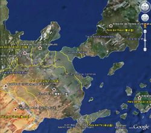

De: La Frikipedia, la enciclopedia extremadamente seria.
De: La Frikipedia, la enciclopedia extremadamente seria. De: La Frikipedia, la enciclopedia extremadamente seria.
Empecemos por el principio: geografía=ciencia de la tierra los mapas y todo ese rollo. Naruto=condimento para preparar ramen. Conclusión: El mundo de Naruto tiene que ver con el ramen y por tanto con la pasta. De lo que se deduce que fue creado por el Monstruo Espagueti Volador y se lo considera tierra santa.
| De la serie Países del planeta tierra: | |||||
| Kon Hoja | |||||
|---|---|---|---|---|---|
| |||||
| Lema: | |||||
| Himno:
| |||||
| 
| |||||
| Capital | Kon Hoja | ||||
| Mayor ciudad | Kon Hoja | ||||
| Lenguas oficiales | Konojiano | ||||
| Gobierno | | ||||
| |
Tsunade | ||||
| Área | 1.000 Km | ||||
| Población | 1.000 | ||||
| Moneda | | ||||
| Zona horaria | UTC+12 | ||||
| Dominio Internet | com.kh | ||||
| Código telefónico | +57 (Creías que no tenían teléfono)
| ||||
Villorrio de mala muerte donde habitan Naruto Uzumaki y su compaña de ninjas pervertidos... Esta rodeado de una muralla para que nadie vea sus practicas sexuales secretas y en el centro hay una montaña donde estan esculpidos los caretos de los ninjas mas pervertidos de la aldea (que reciben el titulo de Hokage).
Fue fundada en 1899 2000 d.C.N. por el primer Hokage un día que no tenía nada mejor que hacer... Después de que se aburriera le dejó el puesto a su hermano pequeño para que se entretuviera y dejara de hurgar en su cartera. Después le pasaron el enchufe a Sandaime que aprovechó el cargo para tirarse a toda kunoichi de la aldea (de ahí la frase: Toda la aldea es mi familia.). Cuando le llegó la jubilación y la viagra dejó de hacerle efecto decidió imitar a sus predecesores y pasarle el muerto al primer tonto que encontró... Osease a Yondaime. Por descracia Yondaime la palmó cuando le entró un coma etílico y se cayó de la espalda de Gamabunta. Entonces el tercero tuvo que volver a tomar el puesto a pesar de que ya no podía cumplir con la población... Catorce años más tarde (2003) la villa fue atacada por Porrochimaru que mató a Sandaime clavándole la espada (solía ser al revés) y el vejete raboverde tuvo que ser hokage buscar a la rubia puta tonta de Tetanic para que ocupara el cargo.
Es un sitio que nadie sabe como Cejotas (el hijo emo de Bruce Lee)se creo en el relleno para que todo el mundo follara luchara con el, aunque solo fue su maestro Gay Sensei a follar entrenar con él (si no has visto el capitulo no lo pillaras en tu vida). También pasó a visitar sexualmente a Lee 1010 "putamente" vestida y le dio masa de piñas para que tenga y guarde, en conclusión lo hizo mierda añicos. Después el tio se quedo encerrado, ya que el muy tonto se dejo la casucha de madera cerrada por fuera con el dentro(nadie sabe como lo pudo hacer), seguramente fue por la sesión sado paliza que le dio 1010 que lo dejó tarado.
Aqui vive el Hokage (dios que listo soy). Cuando empieza la serie, es una honorable casa donde el señor Sarutobi enseña a los ninjas e inculca buenos valores morales y educativos. Cuando este muere, Tetanic lo convierte en casino los fines de semana para seguir su ambición al juego, aunque de lunes a viernes (la parte que se ve en la serie), todo parece que es normal, pero cuando la camara no esta enchufada Sarah Bustani no tarda ni un segundo en abusar sexualmente de la dueña de una puerca usando su chakra Lesbi. En el intervalo de dos años y medio en el cual el japonés rubio se va de putas a entrenar con el vejete raboverde, la casa del Hokage es un casino a tiempo completo y tsunade abusa tambien de su nueva alumna, Planilandia, de ahi que fuera tan fuerte, ya que tubo que aprender a aguantar el dolor de los tetazos que Pechunade le daba en la cara.
Se podrian hacer muchos chistes faciles como que aqui Pescadilla-sensei abusa de los niños y ese rollo, pero no caigamos en topicos y que cada cual imagine lo que quiera. Y digamos que simplemente les hacian crear clones identicos a los alumnos para mayor disfrute de los profesores, quien lo hace bien recibe una bandana que los acredita como putita ninja de bajo rango que se ve obligado a hacer trabajos sucios como limpiar el culo a gamabunta .
Aqui vivian los Uchiha... hasta que Itachi los mato a todos, un dia que se fue la luz, se les peto el generador portatil, se quedo sin bateria el ordenador portatil y en consecuencia se aburria por no poder acceder a la frikipedia. Desde ese entonces, es usado por los proxenetas de la nacion para aprovechar los lugares abandonados y poner sus prostibulos, asi se entiende y se sabe donde estubo el viejo verde durante todo el relleno de la serie.
Es un Centro Comercial (O creías que en Konoha no había) donde se compra todo lo que no se puede conseguir en la calle, pero en la serie nunca lo muestran
Bienvenidos al lugar más finoli y exclusivo de todo Kon Hoja: el country donde los Hyuuga viven, trabajan se follan unos con otros y usan a la rama secundaria de la familia como esclavos sexuales realizan todas sus actividades. En este hermoso barrio privado se encuentra el Hyuuga Porno Studios, donde trabaja toda la familia. En este estudio fue donde se grabaron películas como la versión cinematográfica del libro de Jiraiya "Icha-Icha Paraíso" (con la puta del country el orgullo del barrio Hinata Hyuuga en el papel de la rubia tetona Tsunade). También está el Hyuuga Dancing School, a cargo de Megi Hyuuga, donde enseña a follar pelear a través de pasos de baile de mierda como el popular Macarena no Jutsu.
Es aquí donde se desarrolla la segunda prueba para puta o taxi-boy intermedio Chunnin y cubre 10 Km de radio (Para España seria del centro de Madrid a Alcobendas a pie). Cuenta la leyenda, que en este bosque, la líbido aumenta en un 300%, lo cual genera que siempre la segunda prueba se transforme en una orgía multitudinaria. En este bosque le gusta hacer a Porrochimaru sus clásicos chupetones malditos.
Cuando no hay examen, es un sitio donde las personas van a perder su virginidad, a follar mucho y además es consultorio de putas y taxi-boys.
(Si, Kon Hoja tiene aeropuerto) Es el “Aeropuerto de Konoha” (¿O creías que los ninjas iban a recorrer más de 1.000 km. a pie para llegar a otra aldea en ese mismo día?), fue construido en 1989 cuando dictaba gobernaba el Cuarto Hokage (De allí el nombre), fue construido porque los pobres ninjas y la pobre gente tenían que recorrer a pie más de 1.000 km, pasando hasta 5 días completos (Muchas veces sin comer, dormir ni tomar agua) recorriendo las carreteras para llegar a la próxima aldea; como la pobre gente, los pobres ninjas, tu si sigues esta guía y hasta el mismo Hokage sufría por eso, el Cuarto Hokage le pidió permiso al "Señor Feudal del País del Fuego (El presidente del país)" para construir un Aeropuerto; el "Señor Feudal (El presidente)" lo aprobó y el Cuarto Hokage (Que envés de construir una Vía Férrea para que la gente fuera en Tren, lo que sería más rápido, más seguro y menos costoso) construyó un aeropuerto, con este aeropuerto, la gente solo pagaba el séxtuple de lo que pagaba en el Peaje al ir por carretera pasaba 45 minutos para ir a otra aldea y regresar; aumento la economía de Kon Hoja un 2% (Recuerda que lo único que Kon Hoja exporta son ninjas) y permitía poder viajar a otros países del mundo real.
Pero como toda obra digna de admiración, tenia uno pocos contras:
Pero como hay más de 100 contras, también hay ventajas:
Aldea oculta del país de la mierda su jefe es el Chuchikage y su nombre viene porque todos los habitantes tienen piedras como pelotas de tenis en los riñones (un defecto congenito al ser todos la familia del primer Chuchikage). Se especializan en técnicas del tipo Boton (como por ejemplo tirarle piedras al enemigo). La loca de Akatsuki, proviene de esta aldea.
Se encuentra en el País del Rayo y su jefe es el Reikage (a pesar del nombre no se trata de una monarquía) y es el país donde todos son negros y donde viene nuestro querido y adorado Killerbee.
Estuvieron en guerra con Kon Hoja debido a que el Hokage cometió multiples violaciones en una visita diplomatica. Cuando los nublados (así se conocen entre ellos) intentaron devolverles la gracia secuestrando a la autista tetona para violarla. Se lió un pollo tremendo que acabó con el padre del monstruo Macarena muerto por imbécil.
Suponemos que se especializan en técnicas del tipo puton (que suelen consistir en dar calambre).
La historia se remonta a los años 1600, cuando los españoles gobernaban Latinoamérica (Simón Bolívar no existía). Un español trajo a negros africanos como esclavos al continente. Después de 10 días de navegar llegaron a Cartagena (Colombia). Cuando llevaban a esos pedreros, africanos en cadenas, el español los obligaba a hace todo tipo de cosas hasta que un matrimonio africano, esclavos del español, que les daba muy maltrato desembarco del barco pero el español le pego a la negra del esclavo, y fue allí, se rebeló el negro, como venganza por su amor diciendo "No le pegue a la Negra", hasta que todos los negros se revelaron. Tiempo después (Simón Bolívar no había nacido todavía), los negros eran perseguidos por todos los españoles y sus aliados de Europa. Así, los negros huyeron de Latinoamérica a buscar un mejor lugar para vivir hasta que encontraron un continente perfecto y vivieron allí hasta formar un país con un ejército para no volver a ser perseguidos.
Los siglos pasaron (Ya Simón Bolívar independizo a Latinoamérica) y su ejército (De Ninjas, recuerda que todavía pensaban como negros africanos) se hizo más grande con un gobernante llamado Raikage (De allí salio la palabra Kage del diminutivo sombra que es igual a negro), los países de los alrededores siguieron el ejemplo y formaron ejércitos que se llamaban Shinobis (Palabra Africana) hasta crear las 5 Grandes Naciones Shinobis Unidas.
Poco tiempo después de crearse la Organización de las Naciones Unidas Shinobis (ONUS) se forma las Primera Guerra Shinobi porque los países se peleaban por tener el control de los Bijuus y después de que 2 negros mataran al Segundo Hokage (Recuerda que todavía tenían el instinto de atacar a personas blancas como los españoles).
Los años pasaron y los negros se mezclaban con los aborígenes de la zona hasta crear el mestizaje de Mulatos, Criollos y Zambos en ese continente. 30 años antes de la Cuarta Guerra Shinobi (1981), un niño negro fue elegido entre sus amigos para ser el hermano del actual Raikage por lo tanto se le dio el nombre Killerbee. Tiempo después la aldea propuso a que Killerbee fuera el portador del SIDA Bijuu. Al Killerbee tener el SIDA Bijuu, necesito algo que le llenara el vacio así que empezó con la música que cantan los negros africanos en América, el Rap. Desde entonces el Raikage prohíbe a Killerbee cantar Rap salir del país (Por miedo a que se repita la historia de los negros y con los españoles buscando venganza pero con el Bijuu)
Aldea en la que nunca para de llover por eso sus miembros siempre llevan paraguas y mascaras para respirar bajo el hagua. El Pein-E Provenía de esta aldea pero un día se cansó de tanta lluvia y decidió fundar su propia organización maligna.
Véase: Naruto 3: La gran exitación
Se encuentra en el país de la luna (se puede apreciar claramente la originalidad en los nombres) y es una aldea y... hay luna siempre (menos cuando llueve o esta nueva). Básicamente es una aldeucha de mala muerte y no hay nada mas que decir sobre ella. Sigue leyendo.
Aldea del país de la cagada (valga la redundancia) que se especializan en técnicas de lanzar excrementos del elemento chiton. Su lider es un cobardica sin remedio que entró enchufado.
Aldea que era famosa por preparar ramen con libelulas y otros insectos. Los de Kon Hoja los mataron a todos por no tener el paladar en el culo y solo sobrevivieron Genno y su pajarito.
Aldea famosa por su hagua caliente que te quema cuando te bañas. Por eso la gente de ahí es muy sucia. Aquí nació el fan religiosoque para complacer a su Dios hizo que lloviera (no se como...) y los habitantes no estaban acostumbrados y murieron ahogados.
Está en el país del hagua. Es el lugar preferido para los pederastas y pervertidores de niños, porque con la niebla se resguardan de la pasma y pueden pervertir niños más fácilmente.
Como el Mitzukage era un pederasta del tres al cuarto, los exámenes para genin consistían en violar a todos los compañeros de clase, mientras el susodicho Mitsukage se masturbaba. En uno de estos exámenes, Zamburga se volvió loco, y violó a todos sus compañeros él solito.
Cuenta con una élite de cortadores de tocino (los siete cortadores de tocino de la niebla, entre los que están Zamburga, Raiga y Kisame).
Allí vivían los del clan Kuguya, pero murieron por intentar matar a Jean Claude Van Damme. Sólo quedó el cabrón de Kirimaro, pero este prefirió mudarse a Porrochimaruland Resort villa del Sonido (Porrochimaru también se aprovechó de la niebla para pervertir niños).
Aquí es donde sirven el clásico y afrodisíaco Curry de la Vida. Cejotas se hizo adicto a esa sustancia, porque lo llenaba de líbido energía.
El esclavo trabajador más famoso (y el único más o menos conocido) de este lugar es el sex-toy de Raiga, quien asegura haberse curado milagrosamente de su impotencia sexual parálisis gracias al curry. El único problema es que ahora es adicto y no lo puede dejar.
En el país de las ventosidades. Esta es la aldea en la cual a los niños les compran cajones de arena en lugar de orinales, arena aromatizada en lugar de comida, arena endurecida en vez de piezas de construcción y arena de baja calidad en lugar de arena.
Antes era la hostia, y su arena era exportada a todos los países del mundo, pero al señor feudal del país del viento se le antojó reducirles el presupuesto para subvenciones. Y claro, el señor feudal viviendo como un señor feudal y los aldeanos comiendo arena de baja calidad. Pero Lord Kesekaga en los pantalones Kasekage se cabreó, y no se le ocurrió meterle a su hijo Gaara el espíritu de un monje fusionado con un mapache y restos de pis. Pero la cosa no fue bien, y el chico se revelava, así que se le ocurrió la genial idea de endilgarle el niño a su cuñao (estaba sembrado el tío).
Como el presupuesto flaqueaba aún más, pues se le ocurrió otra genial idea de unirse a Porrochimaru (este tío es tonto). Pero Porrochimaru lo mata y se mete en su cuerpo (lo dicho, este tío es tonto).
El Lord Kesekaga en los pantalones Kasekage que viene después es el emo pelirrojo que también muere, aunque lo resucita Naruto (será desgraciado el puto rubio!) La verdad es que los kesekagan Kazekages siempre acaban mal, porque el tercero pasó a la colección de marionetas de Sasorinocho que luego fue usado para el placer sexual de su dueño en innumerables noches de invierno.
Fundado hace millones de años por la mujer del Primer Kazekage, este puticlub es el más antiguo del país de las ventosidades. Durante miles de años, las hijas mayores de los Kazekages y demás putillas independientes del pueblo iban a trabajar allí y se hacían más que famosas. Como hija mayor del Cuarto Kazekage, Temari tenía un puesto asegurado ahí cuando nació. Trabajó y trabajó hasta que se hizo Jounin (puta experimentada en japonés), entonces se fue y abrió uno propio. Este cabaret, dicen las fuentes, es mejor que el de Kon Hoja, aunque habrá que ir y probar. La estrella del momento es la putilla oficial del Kazekage, Matsuri
Es el burdel de Temari. Es algo chiquito y no tiene tantas putas como el Oficial, aunque no esta nada mal.
Tiene una buena troupe de bailarinas de can-can que luego se cambian la ropa y son las mismas putillas (o sea, son multifáceticas).
Pero, hay malas noticias, Temari no te folla como se debe hace el favor a menos que pagues bien. Y no le fía a nadie, si alguien no puede pagar, lo penetra hasta matarlo manda a volar con su abanico gigante.
Fundada (en realidad copiada de la de Kon Hoja) por el Kazekage y sus esclavos sexuales hermanos, esta academia tiene pasantías en el Primer Puticlub y en Temari's Burdel. Además, esta casa sexual de estudios ofrece un intercambio sexual cultural con Kon Hoja, en el cual los alumnos podrán tener sus primeras experiencias sexuales de trabajo en el Hyuuga's Porno Studios, en el restaurante de ramen y en la academia de putas ninja de Kon Hoja.
Es un lugar que está en el país de los mohosos, en el que cayó un meteorito de cocaína al que los aldeanos lo llamaron estrella (serán hisnorrantes). El Hoshikage (el que manda ahí, que está enganchao a la cocaína), les enseñó a los aldeanos a usar "el poder del meteorito". Murió de sobredosis, y muchos como él, hasta que el tercer Hoshigake se le ocurrió prohibir la cocaína. Y claro, los Yonquis se cabrearon, y salió un tal Akaoshi que lo mató y le siguió enseñando a la gente Las múltiples propiedades de este meteorito sin par. Es cocaína desayunos y meriendas. Es cocaína desayunos y meriendas sin igual. Cocaína. Cocaína. Pero Naruto se picó con él y él y su cuadrilla de ataque se llevaron a Kon Hoja destruyeron el meteorito. Hay que tener mala leche...
Es una aldea que se cree que está entre el país del fuego y el país del hagua, que no tiene ninjas buenos, solo ninjas fumaos (se cree que tienen una alianza con la aldea oculta de la hierba, para crear la aldea oculta de los porros).
Allí estuvo Kakashi, y rescató a una chica de las garras de los hermanos Moyá, que la tenían para que les trajera los porros de la aldea de la hierba y de paso se los liaba. No tenían grandes técnicas, y lo único que hicieron en el combate contra Kakashi fue fumar porros.
Está en el país de la hierba (qué original!). Son los grandes productores y exportadores de marihuana, que están creando un pacto con el país del humo para crear la aldea oculta de los porros. Zetsu viene de ahí, y se sabe por varias cosas, por el protector de la frente (obvio), por que es una planta de marihuana gigante y porque habla consigo mismo como si estuviera fumado.
Artículo principal:Porrochimaruland Resort Villa del Sonido
Bienvenido a Porrochimaruland Resort Villa del Sonido, un lugar situado en los confines del país de los campos de arroz, se encuentra esta paradisíaca villa ninja, con campos de golf, piscinas climatizadas, auditorios (muchos, por eso se llama la villa del sonido), paradísiacas playas... Todo con la mejor atención de los esclavos de Porrochimaru que cuentan con una amplia variedad de chupetones malditos. Ahora, y solo por ser verano, le hacemos una oferta de 50 leros por estancia y día. Y eso no es todo, si es usted uno de los 1000 primeros clientes, recibirá gratis un chupetón maldito.
Despues de que Sasuke matase a Porrochimaru esta pendiente ver quien se queda con Porrochimaruland. Se esta por decidir si se lo queda Torrente el cual piensa hacer de esto Torrenteland Putiresort Villa oculta del sexo de pago del cual hara el mayor prostibulo del mundo.
Es un sitio que está en el país de la nieve (obvio) y donde hay mucha nieve (obvio también). Aparece en una película de Naruto, en la cual el equipo 7 tiene que proteger a una actriz-tía buena que va a este país a rodar una peli porno. Ni qué decir que todo el equipo se la tira (incluída Sakura). Al final, el bruto de Naruto rompe la nieve al pasarse a la susodicha actriz por la piedra, y entonces la aldea tiene que llamarse país de la primavera (¡será animal!)
Está cerca de la aldea de la arena (porque hacen sus artesanías con arena), pero como los arenosos dejaron de "prestarles" arena para hacer sus mierdas bellas esculturas, secuestraron a la peor mejor fangirl del mundo para que su amado sensei la vaya a violar rescatar y posteriormente quitarle al monstruo para zoofilia Shukaku como parte de pago...
Es ése sitio donde hay muchas hogueras, donde está Kon Hoja, y donde hay tíos flipaos que se creen ninjas (ver Naruto Uzumaki). También está aquí el bosque de los cien acres (segundo exámen de chunín), la federación internaciónal de prostíbulos (por lo de chicas calientes) y el valle del fin (del que hablaremos ahora).
País que produce y exporta energía eléctrica. Es famoso porque en el esta la aldea oculta las nubes, por ser el país natal de Pikachu y por desarrollar los pararrayos menos efectivos del mundo (todos los habitantes están electrocutados). Patria del abejorro rapero y su vecinita Yuyito Ni.
País con un clima más tocado que Jim Carrey. En unos sitios llueve y a dos palmos hay niebla o nieva. Los habitantes están hartos y como el señor feudal tenía una maquina del tiempo que hacía que sobre su castillo siempre brillara el sol, Zamburga Momochi intentó dar un golpe de estado para quitársela y cobrar impuestos para que hiciera sol... por desgracia falló.
Hace años las terribles ventosidades de King Kong (que pasaba por allí) convirtieron el país del viento en un enorme desierto donde solo viven escorpiones (antes era una selva tropical). Aquí se encuentra la aldea oculta de la arena.
El país que peor huele (por motivos desconocidos)... Tiene grandes montañas de mierda y poco más... ¡Ah, si! en él esta la aldea oculta de las piedras del riñon... y yata. Aquí nació la loca andrógina
País donde está la aldea oculta de los estrellados. Está rodeado por un cañón lleno de gas venenoso (la idea la tuvo el señor feudal debido a que sus amantes siempre escapaban cuando se quitaba la ropa).
El único país que te saluda solo. No tiene aldea oculta porque son pobres... Tazuna, el constructor de puentes pensaba construir uno del país al continente para cobrar peaje a todo el que pasara y hacerse rico para poder emborracharse cuanto quisiera.
País de ludópatas aficionados a apostar en las carreras. El equipo 7 fue allí para ayudar a un tipo a hacer trampa ganar por el bien de la nación. De allí viene Idiota Morino
País en el que nunca para de llover... en él está la aldea oculta de la lluvia. Si quieres saber más sobre el país leete esa sección y dejame en paz.... De allí viene
Consiste en una gran cagada cascada tras la cual está la villa oculta de la cagada (si, es una cagada de país).
Isla paradisiaca con forma de media luna donde se encuentra la aldea oculta de la luna... y ya está. ¿Que más quereis? Bueno... también sale en la tercera peli de Naruto pero como servidor no la ha visto sus fastidiais.
También conocido como "país de la marihuana" es el sitio con más plantaciones de maría que te puedas imaginar, y es donde está la aldea oculta de la hierba. Se dice que todos sus habitantes son rastas (obvio).
Es un país donde se supone que cultivan mucho arroz, y donde Porrochimaru instaló Porrochimaruland Resort Villa del Sonido, sin pedir la licencia de construcción al señor feudal (¡le va a caer una!). Se sabe que el señor feudal esta siendo investigado por la investigación policial "Operación Triunfo" ya que parece ser que permiti a porrochimaru construir su villa en este pais a cambio de que formara una legión de bisbales que canten y peguen patadas destrozando los timpanos y huevos de todo aquel que pase por delante.
Véase: Naruto la Película
Es donde está la aldea oculta de la nieve (Kishimoto no se come demasiado la cabeza con los nombres de los sitios). Posee una mayor tecnología que el resto de los países, teniendo coches dos veces más rápidos, aviones dos veces más grandes, consoladores dos veces más potentes, putas dos veces más calientes (a pesar del frío de la nieve)...
No hay aldeas de referencia, sino un templo donde está una sacerdotisa que le tira los perros al prota en la vasca que fue la muerte de naruto. (Tía que por cierto tiene un tenebroso parecido con alguien.
Ahí manda el Tercer Hokage a un equipo conformado por: Zanko, Naputo, Coshino y señorita montañas andantes para una misión.
De ahí eran los malosos que atacaron a Kon Hoja en la peli 2
No han participado en ningún conflicto shinobi porque... ¡NO TIENEN NINJAS, POR EL AMOR DE DIOS! En su lugar su fuerza de combate la forman samurais (El enemigo natural del ninja en estado salvaje. Éste país será la sede definitiva de :
un aldea muy espesa con dificil acceso para cualquier tipo de ninja excepto que posee el jutsu de tijeras o un jutsu que le permita quemar pelos
Autor(es):